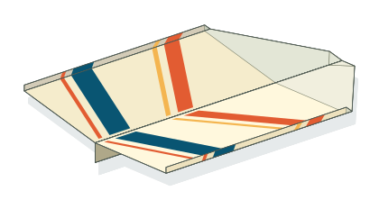
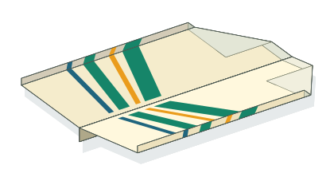

Delta Comet
Tupolev Tu-144
Double sweep · narrow delta. The swept folds distribute wing area differently along the body. Air forces acting ahead of or behind the balance point can pitch the nose. Compare it with the broader DC-3 fold at the same release height.
Open the workshop
What you need
One rectangular sheet and a ruler. You can start with plain paper.
Print the pattern
Print at 100% (Actual size) and check the 50 mm scale on the sheet with a ruler.
Try this flight test
Fold a Delta and a Prairie Skipper from the same paper. Launch each five times gently from the same place. Compare the spots where the two shapes first touch the floor.
See the other models
-

Boeing 747
Fold a whole sheet
-

Douglas DC-3
Fold a whole sheet
-

Ilyushin Il-62
Fold a whole sheet